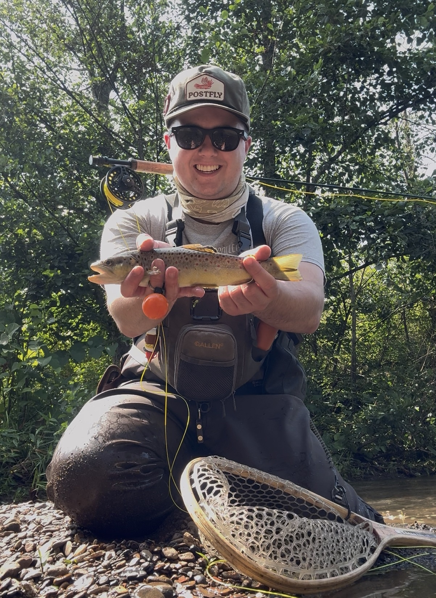

About Me
I created Western PA on the Fly to share my interest in fly fishing and my experiences fishing throughout Western Pennsylvania.
I enjoy exploring local trout streams, learning about aquatic insects, and experimenting with different fly patterns and fishing techniques.

Why I Enjoy Fly Fishing
One of my favorite aspects of fly fishing is that every trip presents a different challenge. Water conditions, insect activity, and trout behavior can change from one day to the next.
Fly fishing requires patience, observation, and problem-solving skills. From selecting the right fly to making an accurate cast, there is always something new to learn.
I also enjoy the opportunity to spend time outdoors and experience the natural beauty of Western Pennsylvania's streams.
Catch and Release
Practicing responsible catch and release can help protect trout populations and preserve fishing opportunities.
When releasing a trout, it is important to minimize handling, keep the fish in the water whenever possible, and allow it to recover before swimming away.
The following video shows a rainbow trout being released into clear water at Vitondale, Pennsylvania.
About This Website
Western PA on the Fly was developed as a student web design project for CSIT 260: Web Programming I at Mount Aloysius College.
The website combines my personal interest in fly fishing with the HTML, CSS, and JavaScript skills I have learned throughout the course.
Visit the Fly Guide to learn about artificial fly patterns, or explore the Hatch Guide to learn about aquatic insects found in trout streams.